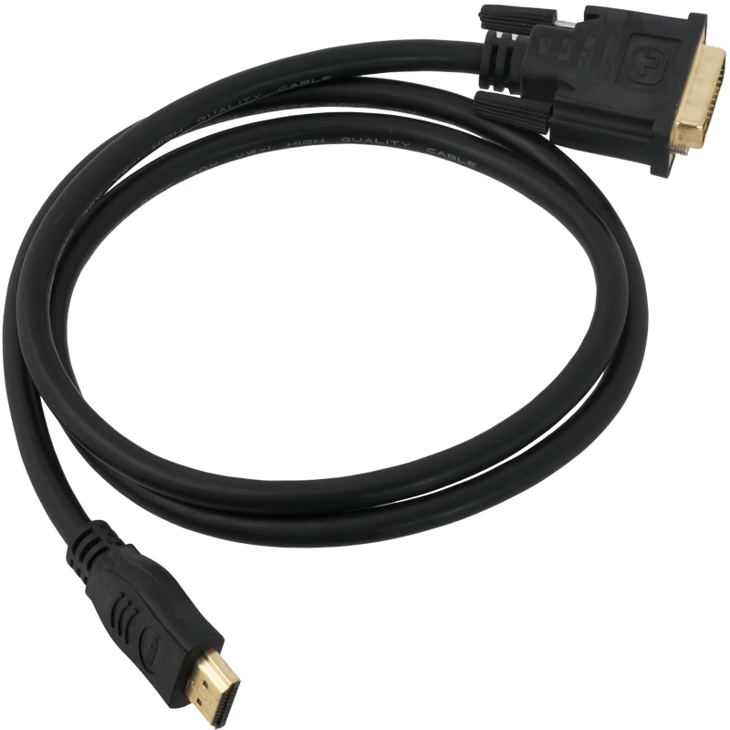
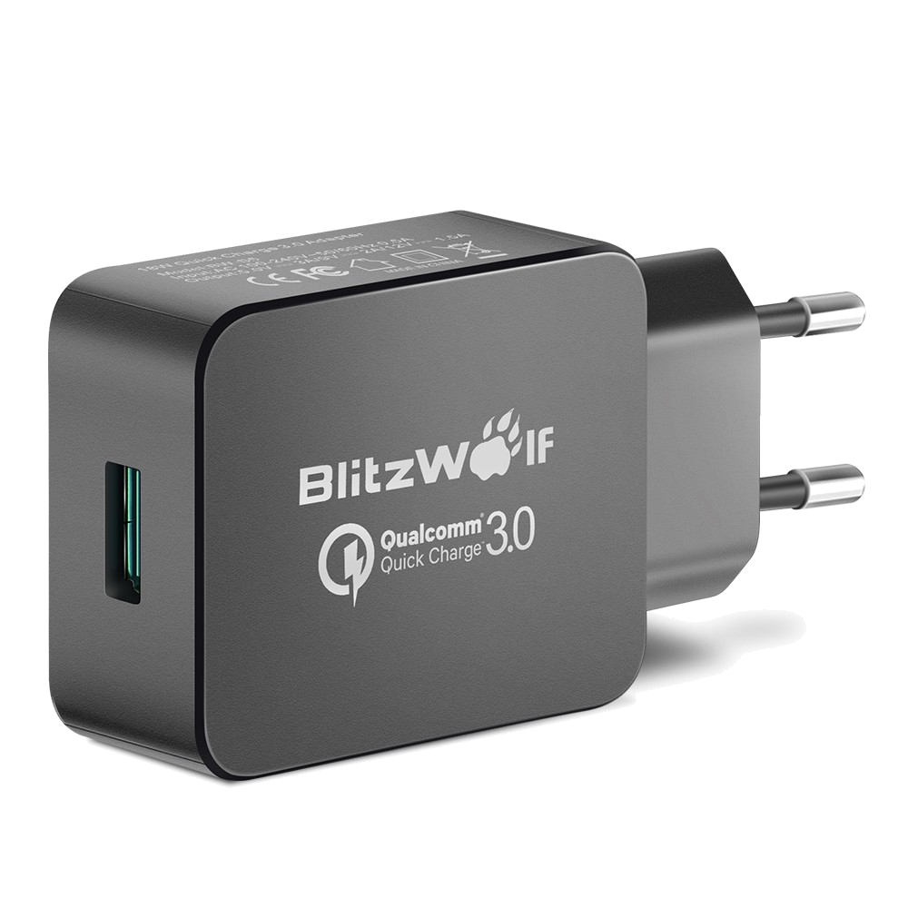
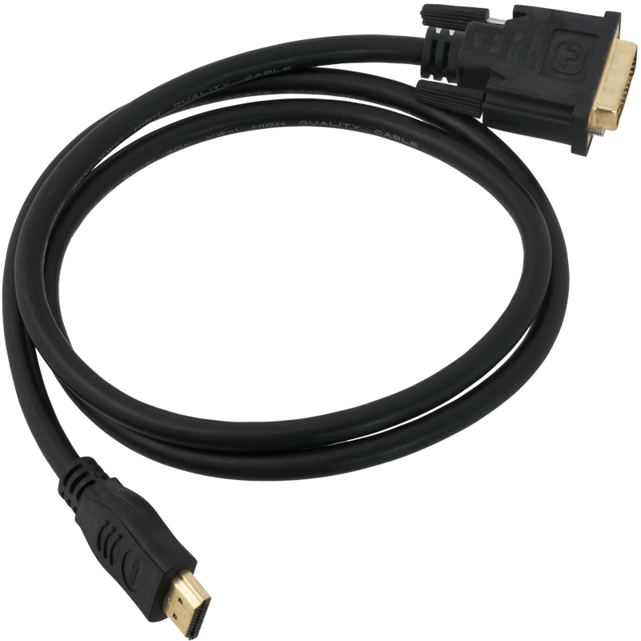
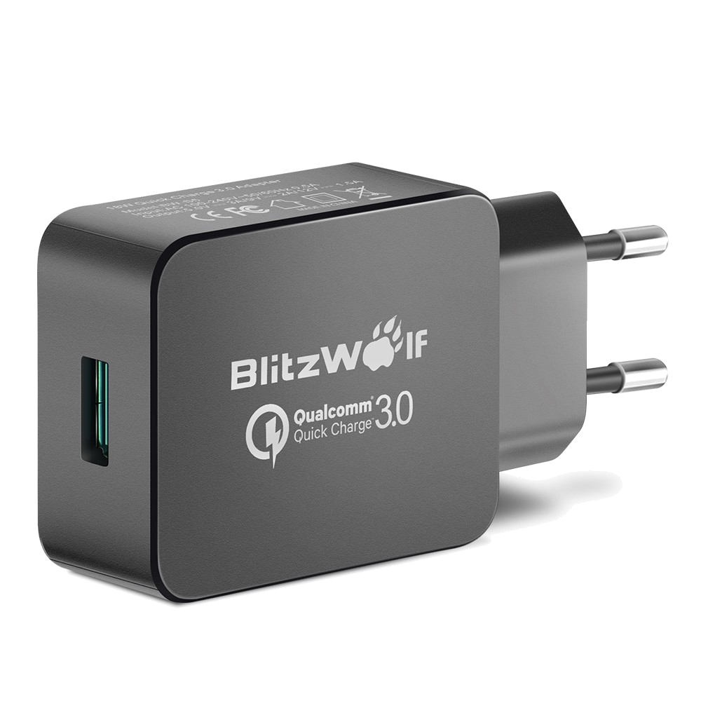

Introductie
Overzicht
- Regels
- Inhoud
- Wat heb je nodig?
- Getting started
Regels
- Eten & Drinken
- Alleen drinken in een sluitbare container
- Op tijd komen
- Chinese vrijwilligers
- U blijft tot het einde
- Max 4x onwettig afwezig
- Niet bellen tijdens de les
- Werk in alle rust
- Materiaal word gevraagd
- Ruim op na het labo
Inhoud
- Raspberry Pi
- Python
- Werkvorm
- Labo's
- Project
- Vaardigheidsproef
Wat heb je nodig
- Raspberry Pi (met WiFi)
- RPi 3
- WiFi Module
- HDMI to DVI kabel
- SD Kaart (8GB)
- 5V 1A Voeding
 



Getting Started
Operating System
- Linux based:
- Arch Linux
- Suse
- Raspbian
- ...
- Windows IoT Core
Tijdens de labo's - Raspbian Lite
Ander OS op eigen risico
Installeren Operating System
- Download
- Windows
- Linux
Tweaks
- Passwoord veranderen
sudo passwd- Activeren SSH
sudo systemctl enable ssh sudo systemctl start ssh- Static IP
- WiFi
Wifi
- WPA Supplicant
- Config file:
/etc/wpa_supplicant/apwifi.conf -
ctrl_interface=/var/run/wpa_supplicant ap_scan=1 network={ ssid="AP wifi" proto=RSN pairwise=CCMP eap=PEAP identity="*******" password="*******" key_mgmt=WPA-EAP } - Activatie
-
sudo pa_supplicant -B -i interface -c /etc/wpa_supplicant/apwifi.conf sudo dhcpcd
Python
- Versies
- Interpreter
- Hello World